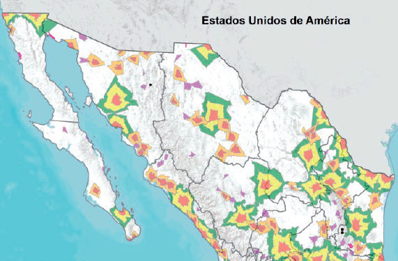
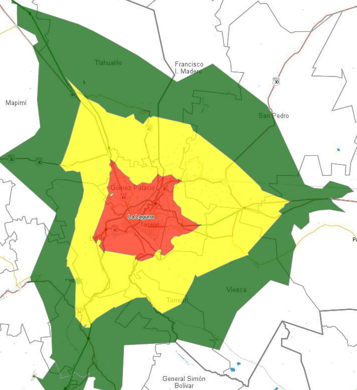

La SEDATU a nivel Federal impulsa una nueva regionalización funcional del país a partir de la influencia de sus asentamientos humanos. La Laguna es uno de los 55 Sistema Urbanos Rurales, con la Zona Metropolitana como centro económico de 14 municipios y 1,633,486 habitantes.
Los límites de los asentamientos humanos alguna vez fueron marcados por barreras naturales que separaban e incidían en el desarrollo de los pueblos, dotándoles de características similares con pueblos cercanos.
El uso y desarrollo de la tecnología permitió expandir la influencia que tenía una comunidad ulterior al límite territorial. Las comunidades se conectaban por medio de caminos y puentes, intercambiando mercancías y conocimientos. La interacción permitía que compartieran una visión del mundo, aunque comenzaba a vislumbrarse una brecha de desarrollo entre los pueblos. Se comienza a configurar las regiones conforme las comunidades van conectándose.
Posteriormente, con el surgimiento de conceptos como estado, ciudad o país, la distribución de los territorios y su administración adquiere otra dimensión. Por medio de líneas imaginarias se dividen los territorios, en delimitaciones político administrativas, que cada vez se ven más rebasadas por fenómenos económicos, sociales y territoriales.
En los últimos tiempos las ciudades como los principales centros de población han sido analizadas más allá de sus límites formales desde el enfoque metropolitano, que considera la conurbación de asentamientos, sin embargo este enfoque tiende también a quedar obsoleto al pasar por alto la interacción que tiene ese asentamiento con el territorio que lo rodea. Entonces ¿cómo deben analizarse y planearse las ciudades y regiones?
México y sus regiones funcionales
En 1940 se comienza a abordar la temática en nuestro País. Centrados en la industrialización, la estrategia era atender situaciones especificas, priorizando la urbanización y adaptando metodologías de análisis e implementación de políticas pertinentes.
Para 1960 se sientan bases institucionales: creándose el Proyecto "Desarrollo Regional y Urbano de México" (PDRUM) bajo la rectoría de Presidencia de la República. Los Comités de Planeación para el Desarrollo (COPLADES) atienden las problemáticas estatales. Derivado de estos esfuerzos se implementa la elaboración de los Planes Estatales de Desarrollo, y se considera el enfoque interestatal.
Hacia finales del siglo XX: los componentes de la dependencia comienzan a distribuirse entre otras instituciones. La planeación se basaba en la administración de recursos económicos para que cada entidad lo invirtiera a su criterio, traduciéndose en esfuerzos aislados y desarrollo asimétrico en las ciudades y regiones de México.
En 2013 la creación de la Secretaría de Desarrollo Agrario, Territorial y Urbano, SEDATU, es un nuevo parteaguas de política pública territorial. Su principal función es integrar el territorio en sus ámbitos urbano y rural. Considerando las funciones de cada comunidad y su aportación a unidades mayores. Se diseña el Plan Nacional de Desarrollo Regional y se adopta la regionalización funcional como el enfoque adecuado para la operación.

Concepto y características de las regiones funcionales
De acuerdo a la SEDATU este enfoque se construye "a partir del análisis de redes de circulación, flujos de personas, bienes e información económica y social, la cual se orienta a la determinación de estructuras económicas caracterizadas por convergencias de interacciones de diferentes órdenes entre la población y sus fuentes de empleo".
Para Bernard Kayser (citado en SEDATU 2015), la regionalización funcional considera los asentamientos como "espacios precisos paro no inmutables" con tres características esenciales. Una de éstas es el rasgo identitario: el vínculo existente entre sus habitantes. Segundo, una organización en torno a un asentamiento referente en la zona, es decir, una ciudad o una zona metropolitana que impulsa el desarrollo y la actividad no únicamente económica, sino política, social y culturalmente. Una integración funcional a un sistema de mayor tamaño (pudiendo ser global) es la tercer característica; la interrelación con otras regiones aportando en calidad o cantidad.
De acuerdo a Normand Asuad y Cristina Vásquez (s/f)
“la región funcional se establece como el área en donde ocurren relaciones estrechas, que pueden o no sobrepasar, por su interdependencia y vinculación, límites nacionales, estatales o municipales. Los límites de dicha región, son difusos, no corresponden a líneas rígidas, abstractas, reales, y pueden obedecer a espacios temporales. Es decir, analizar territorio a partir de las dinámicas económicas y sociales de la población, con independencia de otros criterios de delimitación territorial, como las fronteras político-administrativas.”
La delimitación y análisis de las mismas se propone a través de seis pasos:
- Estudio sobre la caracterización de las áreas físicas y naturales de la región geográfica.
- Identificación de los centros económicos y sus redes de transporte. jerarquizando el sistema de ciudades mediante el análisis de tasas de participación, concentración y el enfoque 80-20.
- Identificación de los flujos representativos, que como variables aproximadas reflejan las interacciones económicas entre sitios y la dirección de éstas.
- Identificación de las actividades económicas que generan los flujos.
- Determinación de tamaños de las áreas de influencia de los diferentes centros económicos.
- Delimitación de regiones mediante los pasos anteriores. (Asuad y Vásquez Ruiz s/f)
Este enfoque permite analizar la influencia de las ciudades al desarrollo de una región para elaborar diagnósticos y políticas más certeros acorde a las necesidades del país. Sus principales unidades son los sistemas y subsistemas urbanos rurales. La conectividad vial y carretera es indispensable para este enfoque.
Sistema Urbano Rural (SUR)
Son nodos centrales en los que se concentran las actividades, presentan alta competencia productiva, con un centro económico cuyo radio de influencia se expande sin fronteras administrativas, en rango de 30, 60 y 90 minutos del centro del asentamiento. Son imán de inversiones y motor de desarrollo para la región.
Subsistemas Urbanos Rurales (SubSUR)
Ubicados en corredores comerciales, tienen límites de influencia de su centro de 20 y 40 minutos, alrededor de asentamientos de entre 15 mil y 300 mil habitantes con servicios financieros, de salud y educación superior.
Centros Articuladores del Sistema (CAS)
Con población de entre 2,501 y 14,999 habitantes educación media superior, consulta de salud externa, telefonía fija y celular, servicios financieros y centros de abasto público y privado.
Centros Integradores de Servicios Básicos (CISB)
Se dividen en Urbanos y Rurales de acuerdo a si su población es de entre 2,501 y 14,999 o menor de 2,500 habitantes.
La Laguna como Sistema Urbano Rural
El enfoque 80-20 del que parte la regionalización funcional, establece una relación de concentración de cualquier atributo, por ejemplo, si hablamos de concentración poblacional, estableceríamos que alrededor del 80% de la población se encuentra concentrada en alrededor del 20% de unidades territoriales.
Desde este enfoque las ciudades se convierten en centros operativos de amplias regiones de influencia. En el caso de La Laguna, desde el enfoque funcional su asentamiento central que es la Zona Metropolitana tiene un ámbito de influencia como Sistema Urbano Rural que impacta en 14 municipios de 2 estados en los cuales habitan a 2015, 1,633,486 habitantes.

Tabla 1. Principales indicadores de Municipios pertenecientes al SUR de La Laguna de acuerdo a su rango de influencia.
| Municipio | Entidad | Población | % | Territorio (km²) | % | U. Económicas | % | Personal Ocupado Total | % | Producción Bruta Total (millones de pesos) | % |
|---|---|---|---|---|---|---|---|---|---|---|---|
| Torreón | Coahuila | 679288 | 41.59% | 1255.98 | 2.32% | 22631 | 49.83% | 185732 | 56.66% | 152037.306 | 68.44% |
| Gómez Palacio | Durango | 342286 | 20.95% | 843.09 | 1.56% | 9356 | 20.60% | 75206 | 22.94% | 53592.930 | 24.13% |
| Lerdo | Durango | 153311 | 9.39% | 2106.62 | 3.90% | 2969 | 6.54% | 18095 | 5.52% | 3905.498 | 1.76% |
| Matamoros | Coahuila | 108950 | 6.67% | 806.17 | 1.49% | 2369 | 5.22% | 9355 | 2.85% | 2053.577 | 0.92% |
| Francisco I. Madero | Coahuila | 58360 | 3.57% | 2764.57 | 5.11% | 1674 | 3.69% | 7851 | 2.40% | 1457.812 | 0.66% |
| Mapimí | Durango | 26502 | 1.62% | 7765.02 | 14.37% | 786 | 1.73% | 2673 | 0.82% | 624.714 | 0.28% |
| San Pedro | Coahuila | 106142 | 6.50% | 7174.48 | 13.27% | 2242 | 4.94% | 12308 | 3.75% | 3171.273 | 1.43% |
| Viesca | Coahuila | 21549 | 1.32% | 4409.96 | 8.16% | 112 | 0.25% | 350 | 0.11% | 65.658 | 0.03% |
| Tlahualilo | Durango | 22895 | 1.40% | 4738.36 | 8.77% | 474 | 1.04% | 3061 | 0.93% | 1244.183 | 0.56% |
| Parras | Coahuila | 44799 | 2.74% | 10523.86 | 19.47% | 1199 | 2.64% | 6903 | 2.11% | 2388.720 | 1.08% |
| Cuencamé | Durango | 35415 | 2.17% | 5187.95 | 9.60% | 956 | 2.10% | 4836 | 1.48% | 1391.780 | 0.63% |
| General Simón Bolívar | Durango | 10110 | 0.62% | 2354.73 | 4.36% | 94 | 0.21% | 163 | 0.05% | 12.903 | 0.01% |
| Nazas | Durango | 12957 | 0.79% | 2427.74 | 4.49% | 251 | 0.55% | 516 | 0.16% | 46.414 | 0.02% |
| Peñón Blanco | Durango | 10922 | 0.67% | 1691.05 | 3.13% | 307 | 0.68% | 735 | 0.22% | 153.015 | 0.07% |
| TOTAL SUR | 1633486 | 100.00% | 54049.58 | 100.00% | 45420 | 100.00% | 327784 | 100.00% | 222145.783 | 100.00% | |
| TOTAL ZML | 1283835 | 78.59% | 5011.86 | 9.27% | 37325 | 82.18% | 288388 | 87.98% | 211589.311 | 95.25% |
Torreón representa el 68 % de la Producción bruta total del SUR Laguna, 57 % del empleo generado, el 50 % de las unidades económicas y el 42 % de la población. Todo ello en un 2.32 % del territorio de la región funcional. De esa magnitud es fuerza es la atracción que ejerce Torreón sobre su región, sin embargo el enfoque metropolitano no es obsoleto sino complementario, pues es la Zona Metropolitana de La Laguna el centro económico de atracción y no sólo el municipio de Torreón. Esta representa sólo el 9 % del territorio, el 79 % de la población, el 82 % de las unidades económicas, el 88 % del personal ocupado y el 95 % de la producción bruta total.
Este modo de entender el territorio obliga a planear las ciudades trascendiendo tanto la visión municipal como el enfoque metropolitano. La región de influencia de la ZML es proveedora y cliente de servicios, productos y talentos de nuestra ciudad y debe ser considerada en la planeación de la misma.
Fuentes
- SEDATU, (2015) Regionalización Funcional de México. Metodología.
- Asuad, Normand Eduardo y Cristina Vasquez Ruiz (Sin Fecha). Regionalización Funcional. Mimeo, UNAM.
- INEGI. Encuesta Intercensal 2015.
- INEGI. Censos Económicos 2014.
Este análisis fue publicado en Milenio Laguna
Sistemas Urbanos Rurales: un nuevo enfoque para el desarrollo regional.